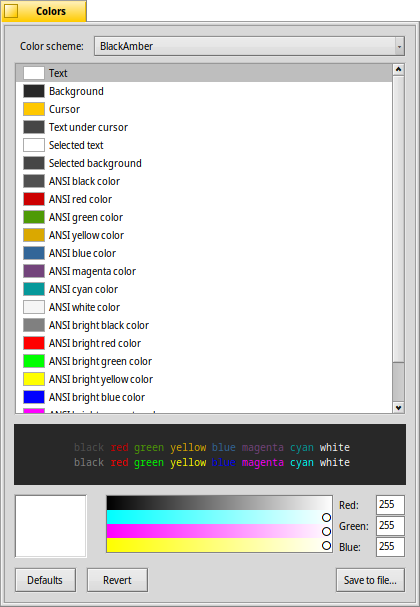

| Зміст |
|
Вікна та вкладки Налаштування Кольори Клавіатурні скорочення Поради для роботи у Терміналі Настроювання Bash користувачем |
 Terminal (Термінал)
Terminal (Термінал)
| Deskbar: | ||
| Розташування: | /boot/system/apps/Terminal | |
| Налаштування: | ~/config/settings/Terminal ~/config/settings/profile – додає нові/перевизначає типові значення в /boot/system/settings/etc/profile ~/config/settings/inputrc – додає нові/перевизначає типові значення в /boot/system/settings/etc/inputrc |
Програма Термінал – це інтерфейс Haiku до командної оболонки, за замовчуванням це bash – Bourne Again Shell.
Будь ласка, зверніться до розділу Написання сценаріїв, де наведено кілька посилань на онлайн-уроки з роботи у командному рядку, а також подивіться розділ Програми командного рядка…. Тут ми зосередимося на самій програмі Термінал.
 Вікна та вкладки
Вікна та вкладки
Ви можете відкрити стільки терміналів, скільки потрібно, кожен у власному вікні, просто запустивши більше Терміналів, або за допомогою комбінації клавіш ALT N з уже запущеного Термінала. Також Ви можете скористатися режимом вкладок Термінала і відкрити більше вкладок за допомогою комбінації клавіш ALT T. Ви можете переключитися на певну вкладку скориставшись клавішею ALT і її номером, наприклад, ALT 2 перемикає на другу вкладку, ALT 4 - на четверту і т.д.
Подвійний клік на порожній частині панелі вкладок відкриє нову вкладку; подвійний клік на вкладці відкриє діалогове вікно для зміни її назви. Існує декілька параметрів, позначених символом «%», значення яких пояснюється підказкою при наведенні курсора миші на текстове поле вводу.
За замовчуванням, текст у заголовку кодується як %1d: %p – вкладка показує поточний каталог і, відокремлену символом : назву поточного запущеного процесу (або -- коли запущено лише bash, без вводу команд). Скриншот вище показує дві вкладки терміналів відкритих з каталогу Desktop, які простоюють у режимі очікування команди.
За допомогою пункту меню можна аналогічно відредагувати заголовок вікна Термінала.
Правий клік миші на вкладці відкриває контекстне меню з пунктами , та . Останній пункт працює як і подвійний клік на вкладці.
Розмір вікна термінала можна змінити, як і будь-якого іншого вікна або скористатися заздалегідь визначеними значеннями у меню . Комбінація клавіш ALT ENTER перемикає у повноекранний режим.
Усі параметри, які Ви змінюєте безпосередньо через меню , такі як , , або будуть діяти лише у поточному сеансі. Якщо Ви хочете зробити зміни постійними, Вам слід використати пункт меню або застосувати їх на панелі .
Налаштування
Пункт меню відкриває панель для настройки стандартних параметрів Термінала.

Більшість запропонованих параметрів говорять самі за себе. Хоча це не зовсім очевидно, розмір шрифту встановлюється у підменю елементів списку .
Наведіть курсор миші на «формули» у текстових полях вводу для назв вкладок і вікон, щоб отримати підказки по доступним параметрам у цих полях.
Далі доступні ще кілька опцій: Ви можете встановити і вибрати .
Увімкніть опцію , якщо Ви працюєте з певним програмним забезпеченням UNIX, якому потрібен доступ до розширеної частини набору символів ASCII, наприклад, GNU Emacs і бібліотека GNU readline.
Увімкніть опцію і Ви отримаєте попередження про спробу закрити вікно термінала, коли програма все ще виконується.
| дозволяє зберігати різні конфігурації як окремі профілі, які при подвійному натисканні відкривають термінал з відповідними настройками. | ||
| повертає настройки, які були активні на момент відкриття панелі налаштувань. | ||
| повертає все до стандартних (типових) значень. |
Кольори
Пункт меню відкриває панель для настройки кольорів, які використовує Термінал.
У верхній частині панелі, зі списку який розкривається, Ви можете вибрати наперед визначену схему кольорів, наприклад, або . Крім вибору уже готових схем, Ви можете створити власну через пункт у списку . Для цього виберіть елемент, колір якого Ви хочете змінити (, , тощо) а потім скористайтеся інструментом настройки кольорів у нижній частині панелі.
Ви можете зробити настройку «кольорів ANSI», це перші 8 названих кольорів у палітрі кольорів термінальних програм. Ви вибираєте колір, наприклад, «ANSI червоний» а потім регулюєте його за допомогою палітри кольорів у нижній частині панелі. Ефект видно у реальному часі на відкритому Терміналі та у вікні прев'ю біля палітри кольорів. Точні кольори, які використовуються у різних місцях, описано у Вікіпедії.
| дозволяє зберегти Вашу власну схему кольорів під назвою, яка з'явиться у списку зверху, якщо Ви збережете її у каталозі типового розташування ~/config/settings/Terminal/Themes (або у системному еквіваленті /boot/system/settings/Terminal/Themes). | ||
| повертає настройки кольорів, які були встановлені до запуску панелі кольорів. | ||
| повертає все до стандартних (типових) значень. |
Клавіатурні скорочення
Список корисних комбінацій клавіш Ви знайдете у розділі Клавіші швидкого доступу.
Ще одна корисна можливість, яка більше схожа на комбінацію клавіш і миші: Якщо утримувати клавішу ALT, шлях або URL під курсором миші підсвічується. Лівий клік миші відкриє файл/папку або веб-сайт. Правий клік миші відкриє контекстне меню з пунктами , та .
Уявіть, що Ви знаходитесь у /MyData/source/haiku/ і маєте шлях generated/objects/haiku/x86_gcc2/release/apps/stylededit/StyledEdit під курсором миші, останній пункт меню призведе до комбінованого абсолютного шляху <глибоко вдихніть>:
/MyData/source/haiku/generated/objects/haiku/x86_gcc2/release/apps/stylededit/StyledEdit.
При утриманні клавіш ALT SHIFT, підсвічується шлях від початку рядка до місця де знаходиться курсор миші.
До речі, правий клік миші у вікні Терміналу вставить буфер обміну. У поєднанні з копіюванням частин підсвічених шляхів це може бути використано для швидкої навігації по ієрархії папок з великою кількістю вкладень.
Поради для роботи у Терміналі
Перетягування лівою кнопкою миші файлу або папки з вікна Tracker до вікна Термінала вставляє шлях до цього файлу/папки у місце де знаходиться курсор. Перетягування правою кнопкою миші відкриває контекстне меню, яке пропонує додаткові дії у відношенні об'єкта перетягування (файлу/папки):
Вставляє шлях до файлу так само, як і перетягування лівою кнопкою миші. Змінює каталог на каталог об'єкта перетягування, тобто файлу/папки (команда cd). Створює посилання на об'єкт перетягування, тобто файл, у поточному робочому каталозі Термінала (команда ln). Переміщує об'єкт перетягування, тобто файл, у поточний робочий каталог Термінала (команда mv). Копіює об'єкт перетягування, тобто файл, у поточний робочий каталог Термінала (команда cp). Ви можете відкрити будь-який файл у пріоритетній програмі, за допомогою команди open [filename]. Це також працює з представленням поточної («.») та батьківської («..») папок, які потім відкриваються у вікні Tracker. Отже, щоб відкрити поточний робочий каталог, виконайте команду:
open .
Якщо команда генерує багато вихідних даних, все швидко прокручується. Якщо Ви використовуєте кілька таких команд, Вам буде важко прокрутити назад і знайти початок останнього виводу. За допомогою пункту меню або ALT L Ви можете очистити буфер прокрутки перед виконанням команди. Тепер, коли буфер прокрутки порожній, Ви можете просто прокрутити назад до самого початку, щоб знайти початок виводу потрібної Вам команди.
Настроювання Bash користувачем
Як йдеться ще з Unix, існує багато можливостей по настроюванню самого bash. Є два файли, які особливо важливі для користувача: profile та inputrc.
Обидва файли можна створити в каталозі /boot/home/config/settings/ і додати або замінити системні параметри за замовчуванням, визначені в /boot/system/settings/etc/.
Файл «profile»
Файл profile завантажується кожного разу, коли Ви відкриваєте новий термінал. У ньому встановлюються всілякі псевдоніми і змінні, які впливають на поведінку і зовнішній вигляд bash. Ви знайдете багато онлайн-ресурсів, які детально описують усі можливості.
Наприклад, на сервері Haiku/BeOS Tip є чимало порад, які допоможуть Вам розпочати роботу:
- Змінюємо запрошення рядка термінала на свій лад
- Змінюємо запрошення рядка термінала на свій лад (продовження)
- Розширений bash
- Комбінації клавіш призначені користувачем
Тут теж можете подивитись.
Файл «inputrc»
Файл inputrc відповідає за прив'язку клавіш. Оскільки Haiku встановлює усі необхідні параметри за замовчуванням, Вам, ймовірно, не доведеться возитися з цими більш складними параметрами. Якщо у Вас є особливі вимоги, зверніться до одного з багатьох онлайн-ресурсів, наприклад, до Бібліотеки GNU Readline.